NetScaler Gateway 11 - SSL VPN
Navigation
- Overview
- Prerequisites
- Create Session Profile
- Create Session Policy
- Bind Session Policy
- NetScaler Gateway Plug-in Installation
- Authorization Policies
- Intranet Applications
- DNS Suffix
- Bookmarks
- VPN Client IP Pools (Intranet IPs)
- StoreFront in Gateway Portal
- Quarantine Group :idea:
:idea: = Recently Updated
Overview
NetScaler Gateway supports five different connection methods:
- ICA Proxy to XenApp/XenDesktop – client is built into Citrix Receiver
- SSL VPN – requires NetScaler Gateway plug-in
- Clientless – browser only, no VPN client, uses rewrite
- Secure Browse – from MDX-wrapped mobile applications (XenMobile), uses rewrite
- RDP Proxy – only RDP client is needed
If Endpoint Analysis is configured, then an Endpoint Analysis plug-in is downloaded to the Windows or Mac client.
Users use SSL to connect to NetScaler Gateway Virtual Servers.
- NetScaler Gateway prompts the user for authentication.
- Once the user is authenticated, NetScaler Gateway uses Session Policies to determine what happens next.
You can configure NetScaler Gateway Session Policies to only use one of the connection methods. Or NetScaler Gateway can be configured to let users choose between ICA Proxy, Clientless, and SSL VPN connection methods. Here’s a sample Client Choices screen using the X1 theme:
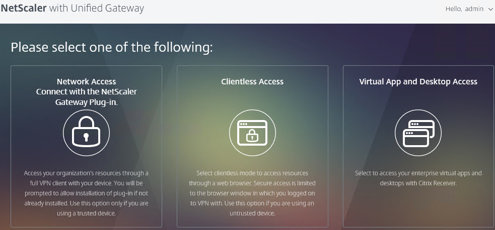
Enable SSL VPN in a Session Policy as detailed later. Then configure additional NetScaler Gateway objects including the following:
- DNS Servers and Suffix – enable DNS resolution across the VPN tunnel
- NetScaler Gateway Universal Licenses – all VPN users must be licensed.
- Intranet IP addresses – give IP addresses to VPN clients. If no client IP, then VPN clients use NetScaler SNIP to communicate with internal resources. Requires routing changes on internal network.
- Intranet Applications – if split tunnel is enabled, configure this object to dictate what traffic goes across the tunnel and which traffic stays local.
- Authorization Policies – if default authorization is DENY, use Authorization Policies to dictate what resources can be accessed across the NetScaler Gateway connection. These Authorization Policies apply to all NetScaler Gateway connections, not just VPN.
- Bookmarks – displayed on the built-in NetScaler Gateway portal page. Users click bookmarks to access resources across the VPN tunnel or clientless access (rewrite).
- Endpoint Analysis Scans – block endpoints that fail security requirements. Configured in Session Policies or Preauthentication Policies.
- Traffic Policies – Single Sign-on to internal web applications
- AAA Groups – bind Session Policies, Authorization Policies, Intranet Applications, Intranet IPs, Bookmarks, and Traffic Policies to one or more Active Directory groups. Allows different Active Directory groups to have different NetScaler Gateway configurations.
Prerequisites
Except for ICA Proxy, all NetScaler Gateway connection methods require a NetScaler Gateway Universal License for each concurrent session. Go to System > Licenses and make sure NetScaler Gateway User licenses are installed.
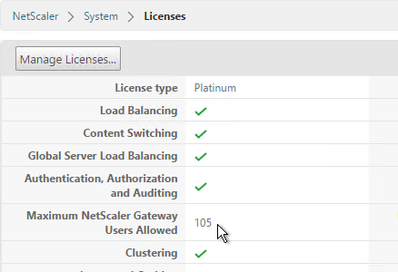
Also make sure the maximum AAA users equals the number of licenses. Go to NetScaler Gateway > Global Settings > Change authentication AAA settings.
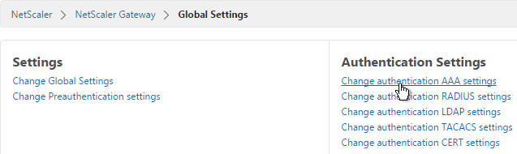
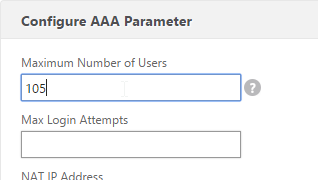
DNS usually needs to function across the VPN tunnel. Go to Traffic Management > DNS > Name Servers to add DNS servers.
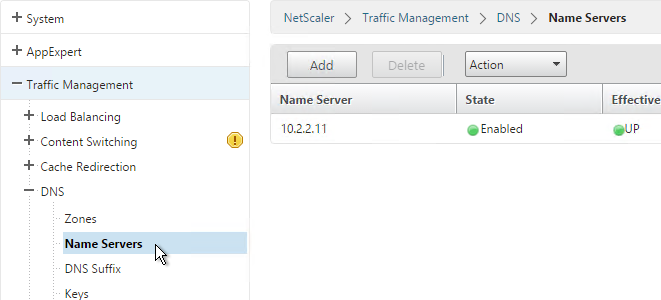
Create Session Profile
You can create multiple Session Policy/Profiles, each with different settings. Then you can bind these Session Policies to different AAA groups or different NetScaler Gateway Virtual Servers. You can also bind Endpoint Analysis expressions to a Session Policy so that the Session Policy only applies to machines that pass the Endpoint Analysis scan.
If multiple Session Policies apply to a particular connection, then the settings in the policies are merged. For conflicting settings, the Session Policy with the highest priority (lowest priority number) wins. Session Policies bound to AAA groups only override Session Policies bound to NetScaler Gateway Virtual Servers if the AAA group bind point has a lower priority number. In other words, priority numbers are evaluated globally no matter where the Session Policy is bound. You can run the command nsconmsg –d current –g pol_hits to see which Session Policies are applying to a particular connection.
Do the following to enable SSL VPN. First create the Session Profile. Then create a Session Policy.
- On the left, expand NetScaler Gateway, expand Policies, and click Session.
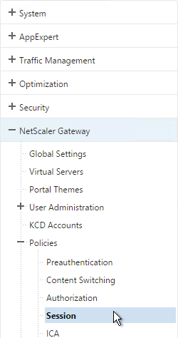
- On the right, switch to the Session Profiles tab and click Add.
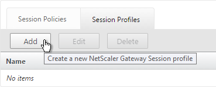
- Name the profile VPN or similar.
- In Session Profiles, every line has an Override Global checkbox to the right of it. If you check this box next to a particular field, then the field in this session profile will override settings configured globally or in a lower priority session policy.
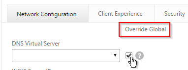
- Switch to the Network Configuration tab and check the box next to Advanced Settings.
- You will find a setting that lets you select a DNS Virtual Server. Or if you don’t select anything then the tunnel will use the DNS servers configured under Traffic Management > DNS > Name Servers.
- Configure the behavior when there are more VPN clients than available IPs in the address pool. This only applies if you are configuring Intranet IPs.
- There are also a couple timeouts lower on the page.
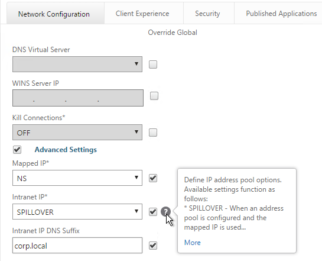
- Switch to the Client Experience tab. This tab contains most of the NetScaler Gateway VPN settings.
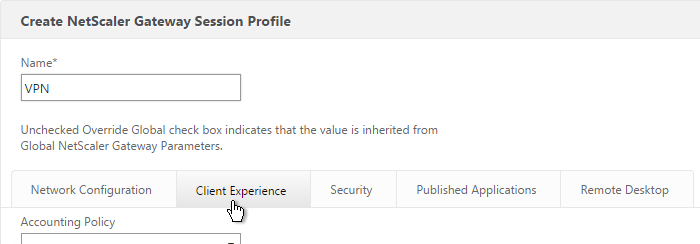
- Override Plug-in Type and set it to Windows/Mac OS X.
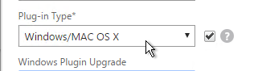
- Whenever NetScaler firmware is upgraded, all users will be prompted to upgrade their VPN clients. You can use the Upgrade drop-downs to disable the automatic upgrade.
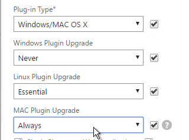
- By default, if Receiver and NetScaler Gateway Plug-in are installed on the same machine, then the icons are merged. To see the NetScaler Gateway Plug-in Settings, you right-click Receiver, open Advanced Preferences and then click NetScaler Gateway Settings.
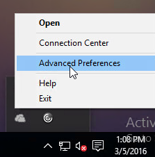
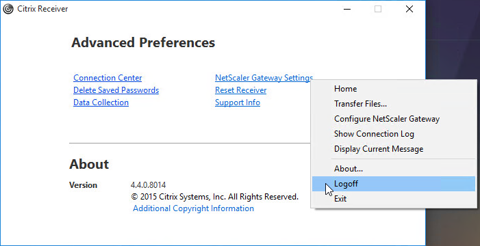
- You can configure the Session Policy/Profile to prevent NetScaler Gateway Plug-in from merging with Receiver. On the Client Experience tab, scroll down and check the box next to Advanced Settings.
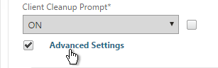
- Check the box next to Show VPN Plugin-in icon with Receiver. This causes the two icons to be displayed separately thus making it easier to access the NetScaler Gateway Plug-in settings.
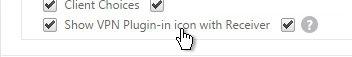
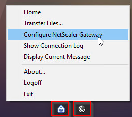
- On the Client Experience tab, override Split Tunnel and make your choice. Setting it to Off will force all traffic to use the tunnel. Setting it to On will require you to create Intranet Applications so the NetScaler Gateway Plug-in will know which traffic goes through the tunnel and which traffic goes directly out the client NIC (e.g. to the Internet).
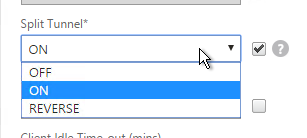
- On the Client Experience tab, there are timers that can be configured. Global Settings contains default timers so you might want to override the defaults and increase the timeouts. See Configuring Time-Out Settings at Citrix Docs for details.
- Client Idle Time-out is a NetScaler Gateway Plug-in timer that disconnects the session if there is no user activity (mouse, keyboard) on the client machine.
- Session Time-out disconnects the session if there is no network activity for this duration.
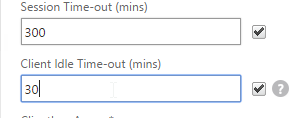
- In addition to these two timers on the Client Experience tab, on the Network Configuration tab, under Advanced Settings, there's a Forced Timeout setting.
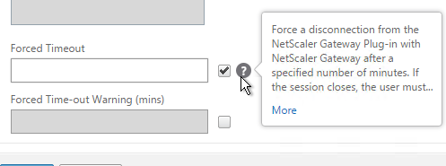
- By default, once the VPN tunnel is established, a 3-page interface appears containing bookmarks, file shares, and StoreFront. An example of the three-page interface in the X1 theme is shown below.
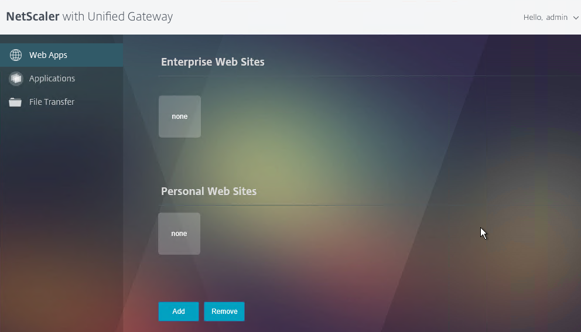
- On the Client Experience tab, the Home Page field lets you override the 3-page interface and instead display a different webpage (e.g. Intranet or StoreFront). This homepage is displayed after the VPN tunnel is established (or immediately if connecting using Clientless Access).
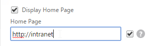
- On the Client Experience tab, there are more settings that control the behavior of the NetScaler Gateway plug-in. Hover your mouse over the question marks to see what they do.
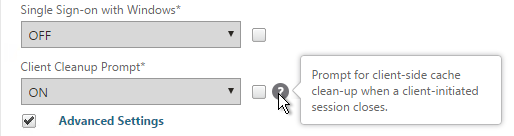
- Additional VPN settings can be found by clicking Advanced Settings near the bottom of the Client Experience tab.
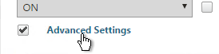
- Under Client Experience > Advanced Settings, on the General tab, there are settings to run a login script at login, enable/disable Split DNS, and enable Local LAN Access. Use the question marks to see what they do. Reliable DNS occurs when Split DNS is set to Remote.
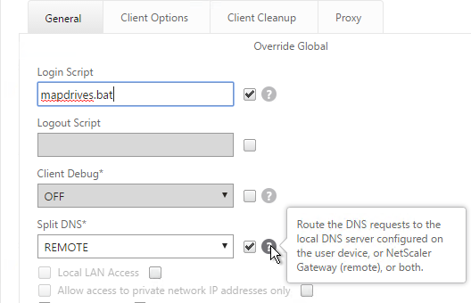
- Under Client Experience > Advanced Settings, on the General tab, is a checkbox for Client Choices. This lets the user decide if they want VPN, Clientless, or ICA Proxy (StoreFront). Without Client Choices, the VPN will launch automatically
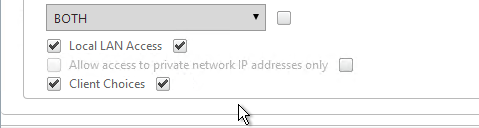
- On the main Client Experience tab, if you enabled Client Choices, you can set Clientless Access to Allow to add Clientless to the list of available connection methods.
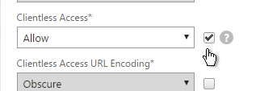
- An example of Client Choices is shown below:
- The Client Experience > Advanced Settings section has additional tabs for controlling the NetScaler Gateway Plug-in. A commonly configured tab is Proxy so you can enable a proxy server for VPN users.
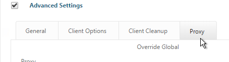
- Back in the main Session Profile, switch to the Security tab.
- Set the default authorization to Allow or Deny. If Deny (recommended), you will need to create authorization policies to allow traffic across the tunnel. You can later create different authorization policies for different groups of users.
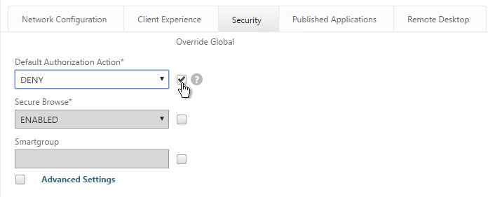
- On the Published Applications tab, set ICA Proxy to Off. This ensures VPN is used instead of ICA Proxy.
- Configure the Web Interface Address to embed StoreFront into the 3-pane default portal page. Note: additional iFrame configuration is required on the StoreFront side as detailed below.
-
From Michael Krasnove: if you configured the Session Policy to direct users to StoreFront, then placing the following code in c:\inetpub\wwwroot\Citrix\StoreWeb\custom\script.js will cause StoreFront to end the VPN tunnel when the user logs off of StoreFront.
var LOGOFF_REDIRECT_URL = 'https://YourGatewayFQDN.com/cgi/logout'; // Prevent the default "logoff" screen from being displayed CTXS.Controllers.LogoffController.prototype._handleLogoffResult = $.noop; CTXS.Extensions.afterWebLogoffComplete = function () { window.location.href = LOGOFF_REDIRECT_URL; }; -
Click Create when you’re done creating the Session Profile.
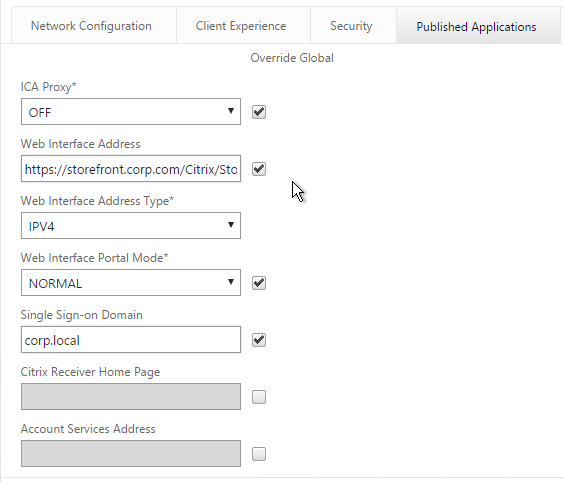
Create Session Policy
- In the right pane, switch to the Session Policies tab and click Add.
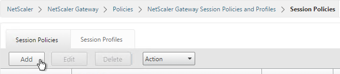
- Give the policy a descriptive name.
- Change the Action to the VPN Profile you just created.
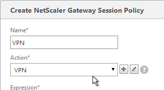
- Add a policy expression. You can enter ns_true, which applies to all connections.
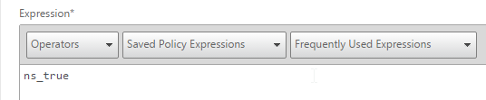
- Or you can add Endpoint Analysis scans. If the Endpoint Analysis scan succeeds, then the session policy is applied. If the Endpoint Analysis scan fails, then this session policy is skipped and the next one is evaluated. This is how you can allow VPN if EPA scan succeeds but all failed EPA scans will get a different session policy that only has ICA Proxy enabled.
- To add an Endpoint Analysis scan, use one of the Editor links on the right.
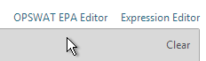
- Configure OPSWAT scans in the OPSWAT EPA Editor.
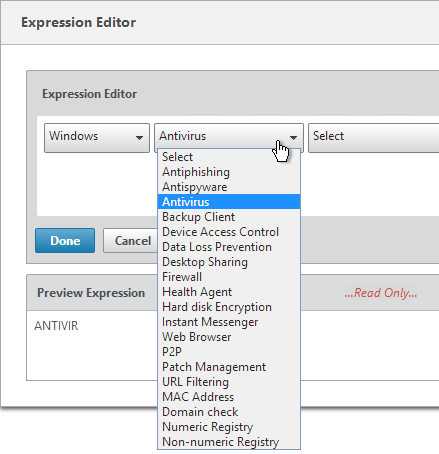
- Configure Client Security Expressions in the Expression Editor.
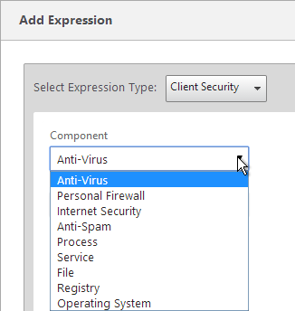
- You can combine multiple Endpoint Analysis scan expressions using Booleans (&&, ||, !). Click Create when done.
Bind Session Policy
Most of the NetScaler Gateway objects can be bound to NetScaler Gateway Virtual Server, AAA Group, or both. This section details Session Policies, but the other NetScaler Gateway objects (e.g. Authorization Policies) can be bound using similar instructions.
- Bind the new session policy to a NetScaler Gateway Virtual Server or a AAA group. If you bind it only to a AAA group, then only members of that Active Directory group will evaluate the expression.
- To bind to a NetScaler Gateway Virtual Server, edit a NetScaler Gateway Virtual Server (or create a new one), scroll down to the Policies section and click the Plus icon.
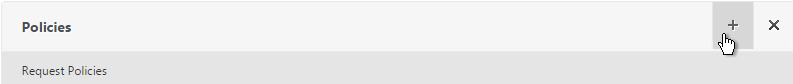
- In the Choose Type page, select Session, Request and click Continue.
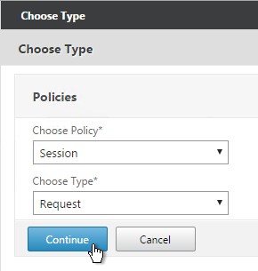
- Select one or more session policies. This is where you specify a priority.
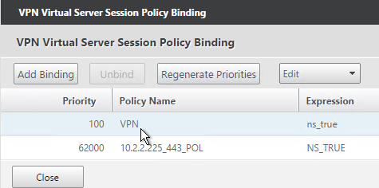
- To bind to a AAA Group, go to NetScaler Gateway > User Administration > AAA Groups.
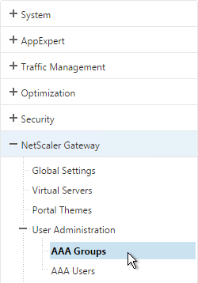
- Add a group with the same name (case sensitive) as the Active Directory group name. This assumes your LDAP policies/server are configured for group extraction.
- Edit the AAA Group.
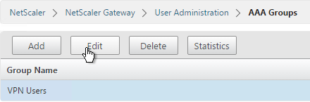
- On the right, in the Advanced Settings column, add the Policies section.
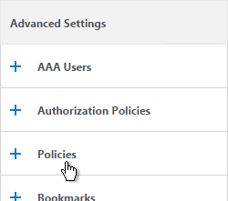
- Click the plus icon to bind one or more Session Policies.
- If you want these Session Policies to override the Session Policies bound to the NetScaler Gateway Virtual Server then make sure the Session Policies bound to the AAA Group have lower priority numbers.
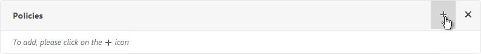
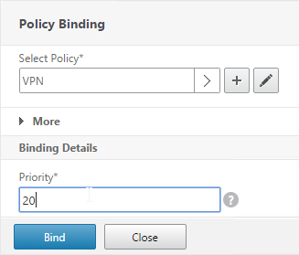
NetScaler Gateway Plug-in Installation
Here is what the user sees when launching the VPN session for the first time.
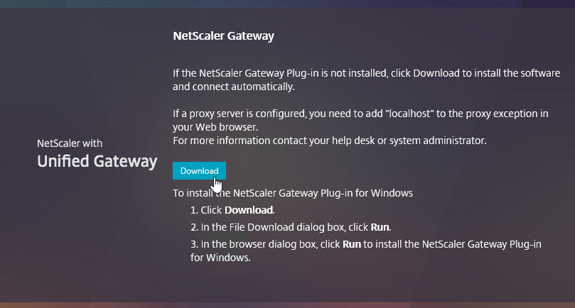
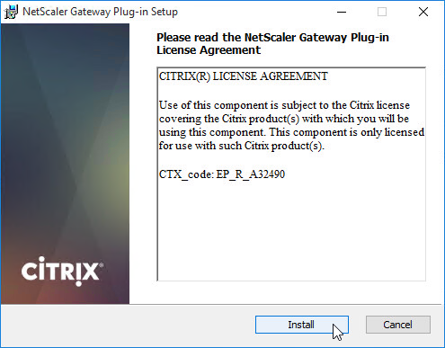
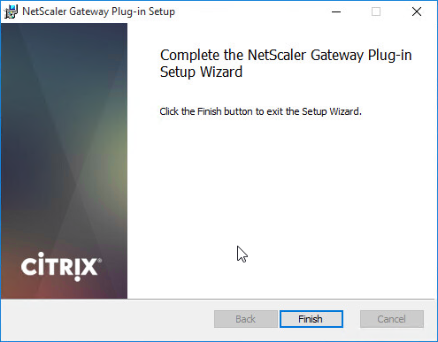
And then the 3-pane interface is displayed.
Only administrators can install the NetScaler Gateway Plug-in. You can download the Gateway plug-in from the NetScaler at /var/netscaler/gui/vpns/scripts/vista and push it to corporate-managed machines. Or you can download VPN clients from Citrix.com. The VPN client version must match the NetScaler firmware version.
Authorization Policies
If your Session Profile has Security tab > Default Authorization set to Deny (recommended), then create Authorization Policies to allow access across the tunnel.
- On the left, under NetScaler Gateway, expand Policies and click Authorization.
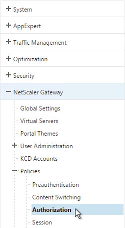
- On the right, click Add.
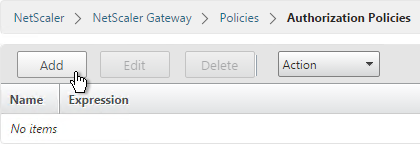
- Name the Authorization Policy.
- Select Allow or Deny.
- NetScaler Gateway requires you to Switch to Classic Syntax. The other syntax option is for AAA.
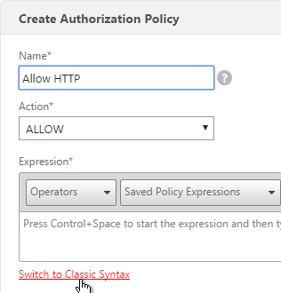
- Enter an expression. Use the Expression Editor link to build an expression. You can specify destination IP subnets, destination port numbers, etc.
- Click Create when done.
- Authorization Policies are usually bound to AAA groups. This allows different groups to have different access across the tunnel.
- On the right, in the Advanced Settings column, add the Authorization Policies section.
- Then click where it says No Authorization Policy to bind policies.
Intranet Applications
If you enabled Split Tunnel, then you’ll need to create Intranet Applications to specify which traffic goes through the tunnel.
- On the left, under NetScaler Gateway, expand Resources and click Intranet Applications.
- On the right, click Add.
- Enter a name for the Internal subnet.
- Change the Interception Mode to TRANSPARENT.
- Enter an IP subnet. Only packets destined for this network go across the tunnel.
- Then click Create.
- Create additional Intranet applications for each internal subnet.
- Intranet Applications are usually bound to the Gateway Virtual Server but you can also bind them to AAA Groups.
- On the right, in the Advanced Settings column, add the Intranet Applications section.
- On the left, click No Intranet Application to bind Intranet Applications.
DNS Suffix
Specify a DNS Suffix for Split DNS to function with single label DNS names.
- On the left, under NetScaler Gateway, expand Resources and click DNS Suffix.
- On the right, click Add.
- Enter the DNS Suffix and click Create. You can add multiple suffixes.
Bookmarks
Bookmarks are the links that are displayed in the 3-pane interface. They can point to file shares or websites.
- Under NetScaler Gateway, expand Resources, and click Bookmarks.
- On the right, click Add.
- Give the bookmark a name and display text.
- Enter a website or file share. For file shares you can use %username%.
- The other fields are for Single Sign-on through Unified Gateway. Click Create.
- Bookmarks (aka Published Applications > Url) are usually bound to AAA groups so different groups can have different bookmarks. But it’s also possible to bind Bookmarks to NetScaler Gateway Virtual Servers.
- If NetScaler Gateway Virtual Server, add the Published Applications section to bind Bookmarks.
- For AAA Group, it’s the Bookmarks section.
- On the left, find the Published Applications section and click No Url to bind Bookmarks.
VPN Client IP Pools (Intranet IPs)
By default, NetScaler Gateway VPN clients use NetScaler SNIP as their source IP when communicating with internal resources. To support IP Phones or endpoint management, you must instead assign IP addresses to VPN clients.
Any IP pool you add to NetScaler must be reachable from the internal network. Configure a static route on the upstream router. The reply traffic should be routed through a NetScaler SNIP. Or the NetScaler can participate in OSPF.
When a client is assigned a client IP, this IP address persists across multiple sessions until the appliance reboots or until the appliance runs out of IPs in the pool.
- Edit a NetScaler Gateway Virtual Server or a AAA group.
- On the right, in the Advanced Settings section, click the plus icon next to Intranet IP Addresses.
- On the left, click where it says No Intranet IP.
- Enter a subnet and netmask. Click Bind.
- To see the Client IP address, on the client side, right-click the NetScaler Gateway Plug-in and click Configure NetScaler Gateway.
- Switch to the Profile tab to see the Client IP address.
- To see the client IP on the NetScaler, go to NetScaler Gateway and on the right is Active user sessions.
- Select one of the views and click Continue.
- The right column contains the Intranet IP.
StoreFront in Gateway Portal
- If you want to enable StoreFront to integrate with NetScaler Gateway’s default portal, edit the file C:\Inetpub\wwwroot\Citrix\StoreWeb\web.config.
- On the bottom, there are three sections containing frame options. Change all three of them from deny to allow.
- Also change frame-ancestors from none to self.
- In NetScaler, go to NetScaler Gateway > Global Settings and click Configure Domains for Clientless Access.
- Change the selection to Allow Domains, enter your StoreFront FQDN and click the plus icon.
- Click OK.
- In a Session Policy/Profile, on the Client Experience tab, make sure Single Sign-on to Web Applications is enabled.
- On the Published Applications tab, configure the Web Interface Address to point to the StoreFront Receiver for Web page.
- Configure the Single Sign-on domain to match what’s configured in StoreFront.
- The Applications page of the 3-page portal should automatically show the StoreFront published icons.
Quarantine Group
NetScaler Gateway can be configured so that if Endpoint Analysis scans fail, then the user is placed into a Quarantine Group. You can bind session policies, authorization policies, etc. to this quarantine group. Policies bound to other AAA groups are ignored.
- Go to NetScaler Gateway > User Administration > AAA Groups.
- Add a new local group for your Quarantined Users. This group is local and does not need to exist in Active Directory.
- Create a new Session Profile.
- On the Security tab, check the box next to Advanced Settings.
- Check the box to the right of Client Security Check String.
- Use the Editor links to add an Endpoint Analysis expression.
- Just below the Client Security Check String, select the previously created Quarantine Group.
- Click Create when done.
- Create a Session Policy and select the Session Profile you just created.
- Enter ns_true as the expression. Then click Create.
- Edit your Gateway Virtual Server and bind the new session policy.
- Bind session policies, authorization policies, etc. to your quarantine group. These policies typically limit access to the internal network so users can remediate. Or it might simply display a webpage telling users how to become compliant.
- To troubleshoot Quarantine policies, use the command
nsconmsg –d current –g pol_hits. - Another option is to use the session policy bound to the Quarantine Group for SmartAccess configuration.
- Gateway Insight (Insight Center 11.0 build 65 and newer) shows users that failed EPA scans and their quarantine status.